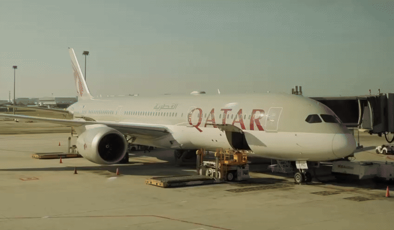
I love to travel and discover new places. Traveling gives me the chance to see beautiful sights and try new things. It also allows me to spend quality time with
family while making unforgettable memories. Every journey feels exciting and full of adventure.
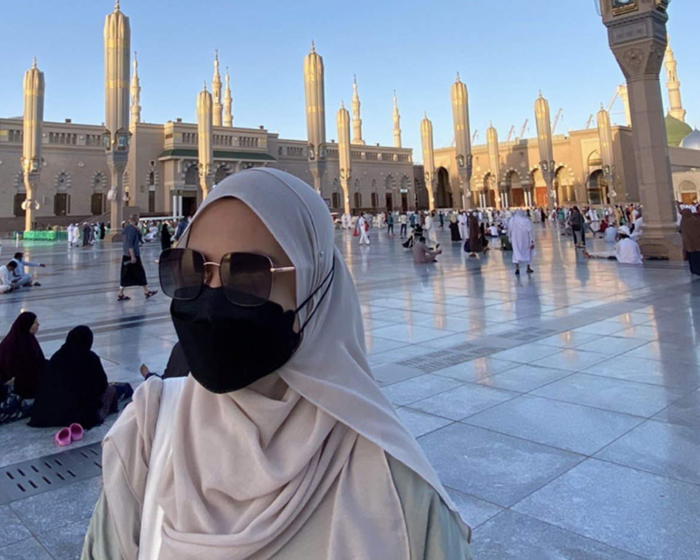
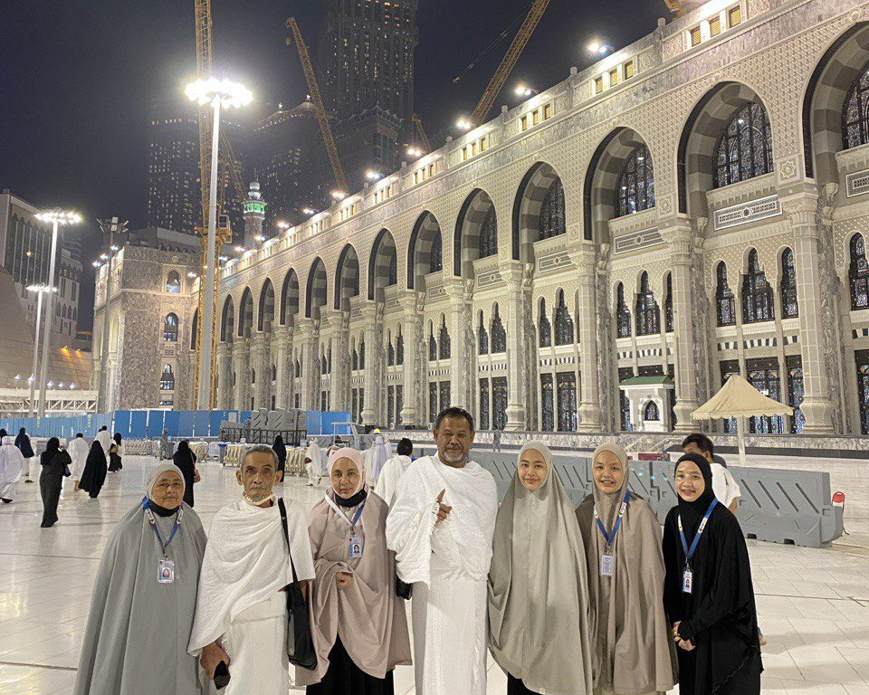
In 2023, I traveled to Saudi Arabia and spent 20 days in the cities of Medina and Mecca. This trip was very special and meaningful to me because it was a spiritual journey that brought me peace, reflection, and gratitude. The experience gave me unforgettable memories and will always remain close to my heart.
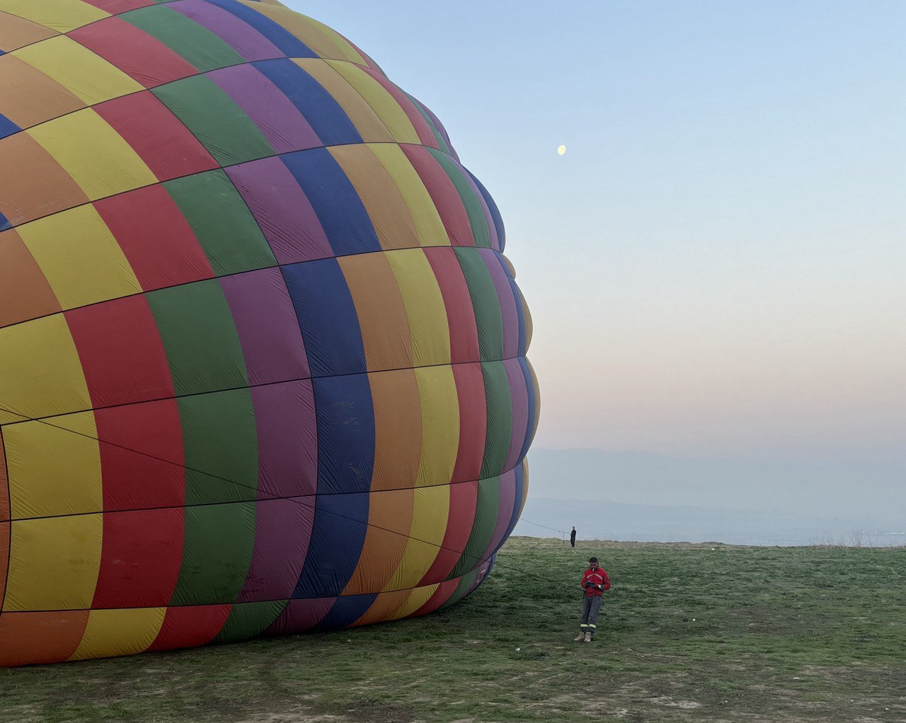
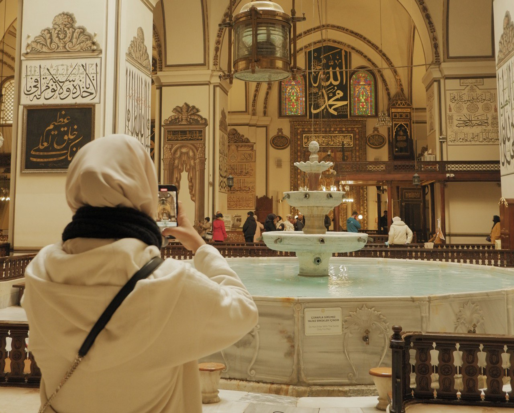
In March 2024, I went to Turkey for 8 days. It was a very memorable trip. I played with snow for the first time, made a snowman, and enjoyed every moment in the cold. Another highlight was riding a hot air balloon in Pamukkale. The view from above was amazing, and I could see the white terraces and the beautiful landscape. Every day in Turkey was full of fun and new experiences, and I will always remember this special trip.
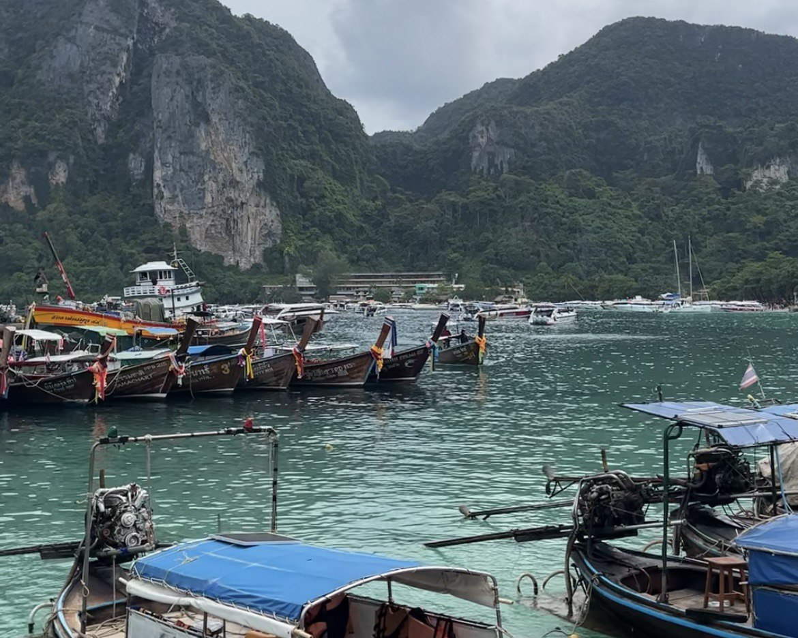
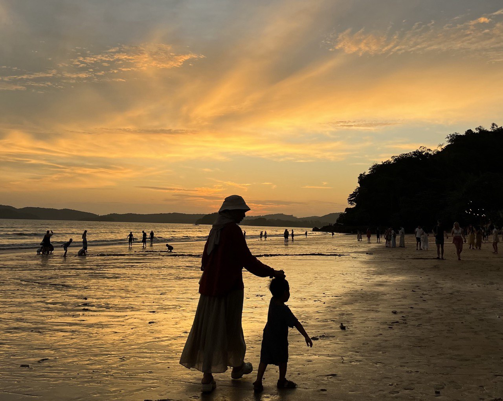
In July 2024, I went to Krabi for 4 days with my sister and my niece. It was a fun and happy trip. We visited Phi Phi Island and enjoyed the clear blue water and beautiful beaches. Spending time with my family made the trip even more special. I will always remember the laughter, the sun, and the amazing views.
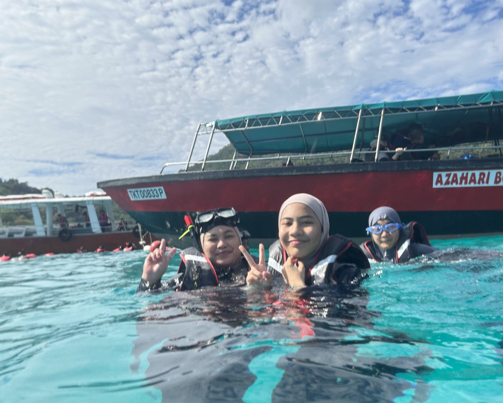
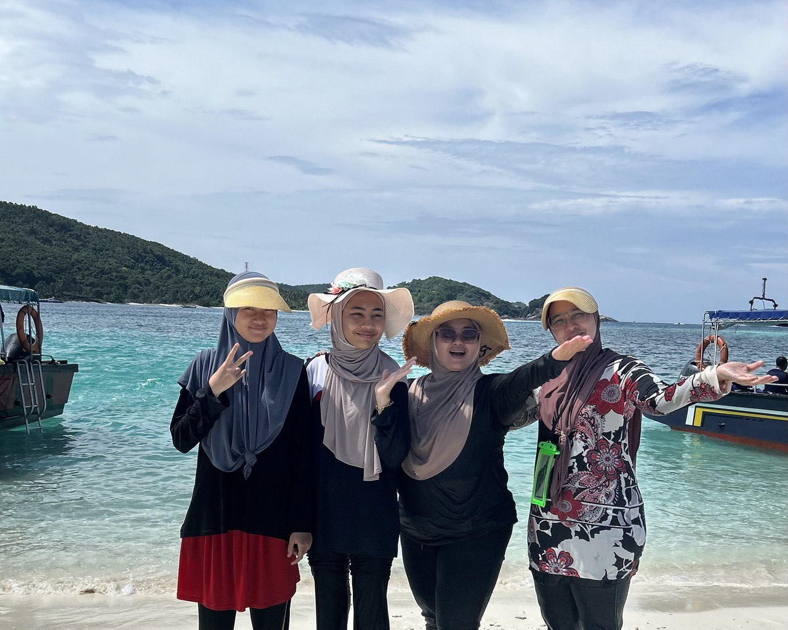
I went to Terengganu and stayed at a homestay with my big family. We spent time together and enjoyed the peaceful surroundings. Then, we went to Pulau Redang for snorkeling. The water was clear and blue, and we saw many colorful fish. It was a fun and relaxing trip, and I will always remember spending time with my family.
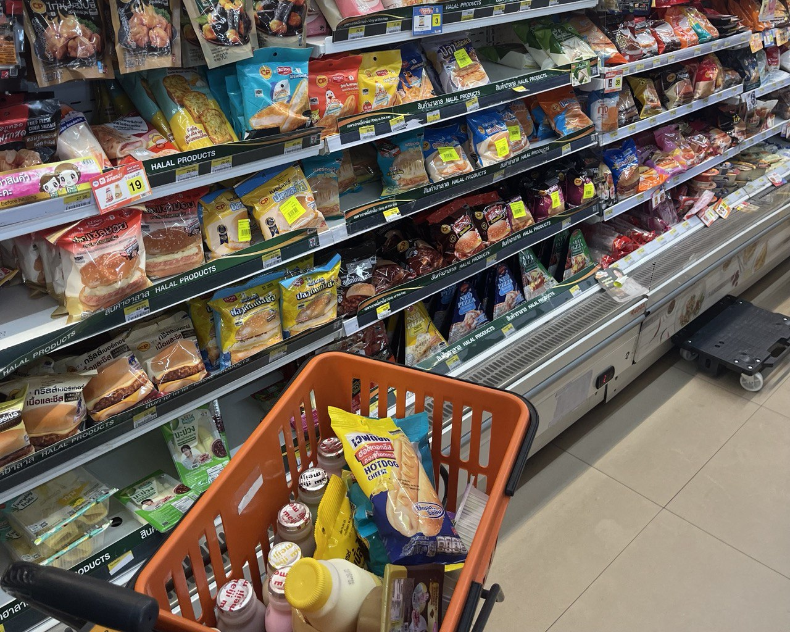
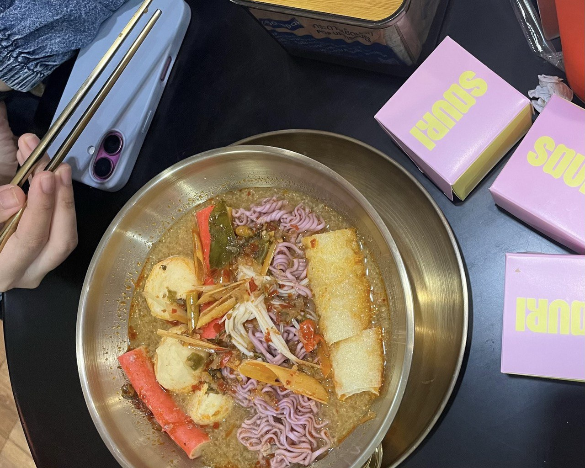
The latest trip was in September 2025, when I went to Hatyai with my auntie. This trip was very chill and relaxing. We went food hunting and tried many local foods together. Walking around the city and enjoying the food made us very happy. Spending time with my auntie during this trip created beautiful memories that I will always remember.
© 2026 Ariyana Aulia | IMD318